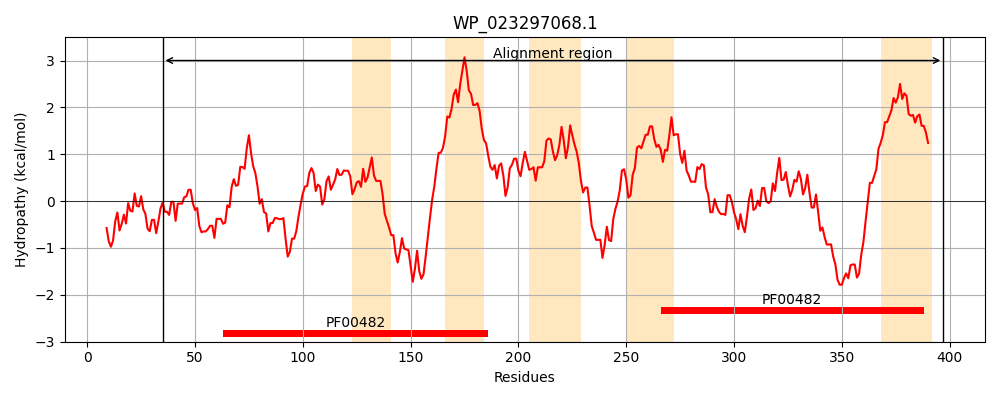
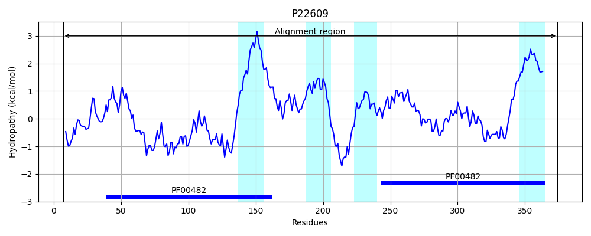

Hit Accession: P22609
Hit TCID: 3.A.15.2.1
Hit Description: gnl|BL_ORD_ID|9407 gnl|TC-DB|P22609|3.A.15.2.1 TYPE 4 FIMBRIAL ASSEMBLY PROTEIN PILC - Pseudomonas aeruginosa.
Mach Len: 368
e:0.000000
Query TMS Count : 5
Hit TMS Count: 4
TMS-Overlap Score: 3.550000
Predicted Substrates:None
BLAST Alignment:
Score: 455 , Bit scores: 179 bits, E-value: 8.1e-53, Alignment length: 368, Percentage identity: 27
Query: 35 LQQQRVMPLAVRRCAVKLNLWHSRYSSETI----RQLATLLQAGLPLADGLSLLAQQQPHPQWQALLESLGRELAQGVAFTTALAQWPQAFPPLYLAMISTGELTGKLDICCQQLANQQQEQQRLAGKVKKALRYPLIVLALALLVVLGMLYFVLPEFTAIYQTFSTPLPLLTRMVVAAGDMLSRGW-PLLLALFLSPLLLNQLVRRRSDWLLRRQRLLNALPLIGPLIGGQQLSLIFTILALTQSAGISFLQGLQSVEATLSCPLWRQRLAQARTLIAQGEPIWQALSRCGGFTPLCLQLIRTGESAGALDQMLENLAHHHREQTHQRADSLAAHLEPIMLVITGSLVGILVVAMYLPVFHLGDAIG 397
L++Q + PL VR+ + L + I RQ+AT++ AG+PL ++ + +P + L++ + +E++ G + +L + PQ F LY ++ GE +G L+ ++A +++ + L K++KA+ YP+ V+ +AL+V +L V+P+F +++Q F LP T+MVV + L W +++ + +L +R + R + LP+ G ++ ++ L+ T +AG+ + L SV +++ +++ + ++ G + ++ F + +Q+ GE +G+LD+ML +A ++ E+ D+L +EP+++ + G LVG L+VAMYLP+F LG+ +G
Sbjct: 7 LRKQGINPLKVRKKGISLLGAGKKVKPMDIALFTRQMATMMGAGVPLLQSFDIIGEGFDNPNMRKLVDEIKQEVSSGNSLANSLRKKPQYFDELYCNLVDAGEQSGALENLLDRVATYKEKTESLKAKIRKAMTYPIAVIIVALIVSAILLIKVVPQFQSVFQGFGAELPAFTQMVVNLSEFLQEWWLAVIVGVGAIGFTFKELHKRSKKFRDTLDRTILKLPIFGGIVYKSAVARYARTLSTTFAAGVPLVDALDSVSGATGNIVFKNAVSKIKQDVSTGMQLNFSMRTTSVFPNMAIQMTAIGEESGSLDEMLSKVASYYEEEVDNAVDNLTTLMEPMIMAVLGVLVGGLIVAMYLPIFQLGNVVG 374 | Protein Hydropathy Plots: |
|---|
|  |  |
Pairwise Alignment-Hydropathy Plot:
|
|---|
 |